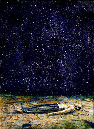

01.30.07
Posted in Uncategorized at 12:02 pm by danvk
Last night Stephen Colbert took on Wikipedia again, asking his viewers to edit the Reality article to say “Reality has become a commodity”. He was hoping to reprise his previous successes with the African elephant article, but it didn’t work out so well for Colbert. Check out the article history. The article became “reality becomes a commodity” at 11:39 PM EST, just as Colbert gave his report. Within one minute, the article was reverted and protected so that only administrators could edit it. There’s been no damage since. An article for wikilobbying, the day’s word, also appeared but it was immediately deleted. Wikipedia doesn’t let ordinary users view deleted articles’ histories, so I have no idea what this one said.
In the end, the articles were vandalized for less than one minute total, and the guy couldn’t even get Colbert’s phrase quite right. Colbert definitely won the African elephant round, but I think this one goes to Wikipedia. It’ll be interesting to see if Stephen C mentions this again and how he spins it. Nice work, Wikipedia!
Permalink
01.15.07
Posted in Uncategorized at 11:37 am by danvk
Who would have guessed? The Wave wasn’t invented until 1981, and it even has its own priority dispute! I’m taking Crazy George’s side over Rob Weller’s, since he has so much more vested in this.
Permalink
11.15.06
Posted in Uncategorized at 6:41 pm by danvk
I’m slowly developing an instinct to share any items I enjoy in Google Reader, but this means that I often find myself wanting to share an article from outside of Reader. I’ll stumble across a site, (usually from reddit or A&L Daily) enjoy an article, and want to share it. But I can’t, because I don’t subscribe to that random site’s RSS feed. Here’s a workaround:
- Add the “Subscribe…” link from Settings -> Goodies to your toolbar, or use this link: Subscribe… there.
- When you find an interesting story, click “Subscribe…”
- Find the article you want in the RSS feed and hit Shift-S to share it
- Close the tab/window. Don’t hit subscribe!
I haven’t found any other way to “preview” an RSS feed in Reader like this w/o subscribing. Here’s to a useful, obscure feature…
As always, you can subscribe to my shared items using the link on my Blogroll.
Permalink
11.06.06
Posted in Uncategorized at 12:56 am by danvk

Is Computer Science really science? Interesting discussion here and here and here, kind of. I’m not sure what to think on this one. It obviously depends on you mean by “science,” but Theoretical CS has always struck me as far more similar to Math than Science.
If your Macbook Pro mysteriously stopped sleeping when you closed it, try downloading the combined 10.4.8 update from Apple.
I really like Anselm Kiefer. I would have linked directly to the San Francisco MOMA page on him, but they just had to make it all Flash. Jerks.
I also really like C++, particularly after reading about Boost.Lambda. Just like most other languages, it’s all about introducing useful abstractions. Unlike any other programming language I know of, it usually does this with zero performance degradation over C. More specifics when I start writing about Boggle…
Permalink
10.08.06
Posted in Uncategorized at 12:05 am by danvk
I visited http://www.owlnet.rice.edu/~danvk and was greeted with a 404 File Not Found page. Has my Rice home page been taken down? I don’t know whether this is temporary or permanent, but as a precaution, I’m going to begin moving my old site’s content over to danvk.org.
Permalink
« Previous Page — « Previous entries
Next entries » — Next Page »